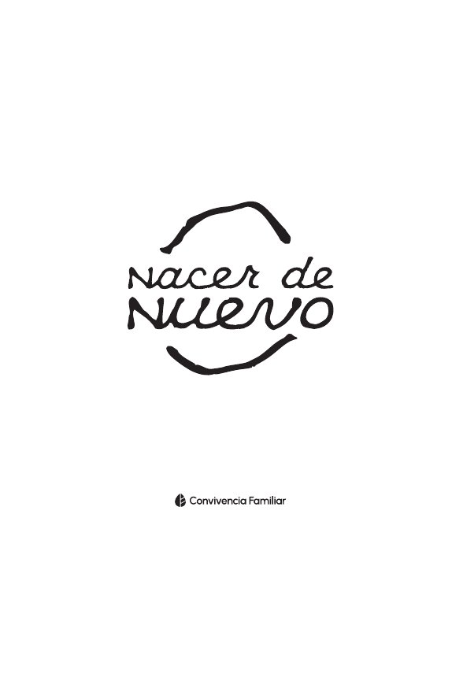

Teodicea: Cristo, la cruz y la restauración
Una defensa de la bondad de Dios frente al mal, a través de la Torá, los Profetas, el Nuevo Testamento y la historia de la iglesia, cuya respuesta final se encuentra en Cristo y la cruz.
Entender el evangelio desde Génesis
Enseño la Biblia para que más personas descubran que el evangelio de Jesucristo no comienza en Mateo, sino en las primeras páginas de Génesis. Aquí encontrarás mis libros, videos, ensayos, clases adaptadas para leer y el ministerio que dirijo.

Clases en vivo de Intensivo Convivencia convertidas en artículos. Conservan el tono de la clase: preguntas, ejemplos y el texto abierto.
Trabajos escritos en Talbot y Dallas Baptist University, con notas, bibliografía y PDF.
Cinco libros para recorrer la Torá: de dónde venimos, para qué existimos y hacia dónde vamos.
Enseñanza con el texto en pantalla: el pasaje, el contexto y una idea clara por video.
Soy Daniel Lira Serhan, maestro de la Biblia y autor de la serie de libros Orígenes: El evangelio en Génesis, en la que muestro cómo el mensaje de Cristo está presente desde el principio de las Escrituras.
Actualmente curso la MDiv en Talbot School of Theology (Biola University) y anteriormente estudié en Dallas Baptist University. Mi deseo es que la enseñanza bíblica sea fiel al texto, clara y útil para la vida de la iglesia.
Dirijo Intensivo Convivencia, un programa de discipulado para jóvenes que busca que conozcan a Cristo, lo experimenten, crezcan en comunidad y sirvan a la iglesia. También comparto enseñanza bíblica en mi canal de YouTube.
Vivo en Monterrey, México, y sirvo en la iglesia Convivencia Familiar Monterrey.
“Yo soy el que habla contigo.”Juan 4:26
Nací en una familia cien por ciento musulmana. Mi mamá y mi abuelo eran musulmanes, y crecí en Torreón, en la mezquita que construyó mi abuelo. Para mí, Jesús era solo un profeta más. Un día, un conocido me escribió por chat: “¿Tú conoces a Jesús? ¿Ya te lo presentaron?”. Le contesté de mala gana y no volví a hablar con él, pero esa pregunta se quedó conmigo y cambió el rumbo de mi vida.
Vivía en Estados Unidos y todo parecía ir bien, pero empecé a sentir un vacío profundo y regresé a México. Seguía identificándome como musulmán, aunque en el fondo ya no creía en Dios. En Monterrey me aferré a la idea de que la verdad no existe y de que cada quien construye la suya, pero todo lo que construía se derrumbaba una y otra vez. En medio de esa oscuridad, mi papá llegó a Cristo y comenzó a hablarme de Jesús.
Durante cuatro años platiqué con budistas, hindúes, testigos de Jehová, musulmanes y chamanes, investigué y leí como nunca. Todas las noches oraba: “Si eres real, háblame”. Por fin me atreví a abrir la Biblia y leer el Evangelio de Juan. En el capítulo 4, Jesús le dice a la mujer samaritana: “Yo soy el que habla contigo”. Sentí que me miraba a los ojos y me decía: “Llevo años hablándote; eres tú el que no escucha”. Desde entonces, mi vida le pertenece.
Enseñanza bíblica para entender lo que la Escritura dice y por qué importa.
Video destacado
¿Cómo saber si la Biblia dice la verdad? (Mi historia de musulmán a cristiano)
Visita mi canal de YouTube El evangelio en Génesis
El evangelio en GénesisEl evangelio en la Torá · cinco volúmenes
Orígenes es una serie de cinco libros que acompaña al lector en su proceso de descubrir quién es Dios y enamorarse de Él. Es una guía del lector por los primeros cinco libros de la Biblia, la Torá o Pentateuco (Génesis, Éxodo, Levítico, Números y Deuteronomio), para descubrir sus patrones y el hilo conductor de las Escrituras: juntos dan el mensaje del evangelio y responden cuál es nuestro origen, nuestro propósito y nuestro destino.
El primer libro, Orígenes: El evangelio en Génesis, comienza “en el principio”: el origen de todas las cosas, el momento en que entró la corrupción y el plan de Dios para restaurarlo todo. Recorre la creación, el diseño del ser humano a imagen de Dios, los dos árboles del Edén y la caída, mostrando cómo Génesis da un vistazo a toda la historia de la humanidad y responde preguntas fundamentales.
Vol. I · Segunda edición en proceso editorial

Nacer de nuevo (segunda edición, 2026), escrito por Luis Ortiz, Daniel Lira y Rodrigo Weigend, parte de la historia de Nicodemo y la invitación de Jesús al Reino de Dios para explicar qué significa nacer de nuevo. Recorre nuestra naturaleza corrupta y la obra de Dios que nos hace su obra maestra, y explica el bautismo en agua: de dónde viene y por qué bautizarse. Termina con los siguientes pasos: confiar en Dios, convertirte en quien ya eres, conocer la gran historia e integrarte a la iglesia.
Ensayos académicos escritos durante mis estudios teológicos.
Una defensa de la bondad de Dios frente al mal, a través de la Torá, los Profetas, el Nuevo Testamento y la historia de la iglesia, cuya respuesta final se encuentra en Cristo y la cruz.
Un ensayo exegético de Efesios 1 sobre la obra del Padre, el Hijo y el Espíritu a favor del creyente en Cristo, para la gloria de Dios.
La vergüenza y el miedo de Génesis 3 como fruto del pecado, y la gracia de Dios que cubre al ser humano.
Reads Jeremiah 17:5–13 as poetic commentary on Deuteronomy, contrasting the way of death with the way of life.
Shame and fear in Genesis 3 as the fruit of sin, covered by God's grace.
The church built on the trinitarian work of God described in Ephesians 1:1–14.
The problem of evil traced across the Bible, Second Temple Judaism, the Church Fathers, and modern debates.
An overview of the modern Messianic Jewish movement and a Christian response.
A review of Spilsbury's reader's guide to the book of Revelation.
Clases en vivo de Intensivo Convivencia convertidas en artículos para leer. Conservan el tono de la clase y son distintas de los ensayos académicos.
La fe no es ciega: es certeza. Mi historia del islam y el ateísmo a Cristo, y tres pruebas que la Biblia pasa: historia, congruencia y confiabilidad.
Nunca vamos a comprender a Dios por completo, pero sí podemos conocerlo verdaderamente. Sus atributos incomunicables y comunicables, y por qué estudiarlos.
Las seis doctrinas de Hebreos 6 y la primera: las obras muertas, Adán y Eva entre hojas y pieles, y la tristeza que viene de Dios.
Bautismo es ser sumergido. De los lavamientos del Éxodo y la mikve judía a Cristo, y los cuatro bautismos: en el cuerpo, en agua, en el Espíritu y en el sufrimiento.
La fe no es ciega y Dios habla en su Palabra y en su cuerpo. La imposición de manos: una acción física que da testimonio de algo invisible.
No existe el fin del mundo, sino el fin de esta era. Resucitaremos en cuerpos glorificados, y Cristo es el primer fruto.
Qué es la Biblia, por qué es la palabra de Dios y cómo está estructurado el Tanaj: la Torá revela el carácter de Dios, los Profetas su plan y los Escritos su gloria.
Introducción y Génesis 1 y 2: Dios crea todo bueno y hace al ser humano a su imagen para conocerlo, amarlo y disfrutarlo. Dos árboles, una decisión.
Génesis 2 y 3: la tentación, la vergüenza y el miedo, y la promesa de una simiente que herirá a la serpiente. Dios sale a buscar y cubre con pieles.
Génesis 4 al 11: la corrupción avanza de la familia a las naciones, y en cada caída Dios deja una promesa: Set, Noé, el arco y una persona que reunirá a las naciones.
Génesis 12 al 22: Abraham cree y le es contado por justicia. Solo Dios pasa entre los animales partidos, y en el Moriah provee un sustituto en lugar de Isaac.
Génesis 25 al 45: Dios renueva su pacto por generaciones. Jacob es quebrantado y se llama Israel; José, fiel en lo poco, es enviado para preservar un remanente.
El evangelio completo en Génesis y la bendición de Jacob a Judá: el cetro no se apartará hasta que venga Siloh, el rey a quien pertenece el gobierno.
Introducción a Éxodo y capítulos 1 al 5: la opresión en Egipto, Moisés sacado de las aguas, la zarza que arde y Dios que se presenta por nombre: YO SOY EL QUE SOY.
Éxodo 6 al 17: las cuatro promesas de Dios a Israel, las diez plagas contra los dioses de Egipto, la Pascua, el mar abierto y la provisión en el desierto.
Éxodo 19 al 24 como una ceremonia matrimonial: Dios pide la mano de Israel, el pueblo dice sí, los diez mandamientos como votos y la cena con Dios en el monte.
Éxodo 25 al 40: Dios pide un santuario para habitar entre su pueblo, el becerro de oro, Moisés que habla con Dios como un amigo y la gloria que llena el tabernáculo.
Sesión extra de Éxodo: las cuatro copas de la cena de Pascua y las cuatro promesas de Éxodo 6, la copa que Jesús levantó en la última cena y la que dejó en la mesa.
Introducción a Levítico: Dios llama a Moisés desde la tienda de reunión, «acércate», y da a Israel sacramentos, señales externas de una gracia interna, para habitar con Él.
Levítico 1 al 5: el holocausto o sacrificio de ascensión, la ofrenda de cereal, la ofrenda de paz (shalom) y las ofrendas por el pecado y la culpa, y por qué la ley no era difícil de cumplir.
Levítico 8 al 10: la consagración de Aarón y sus hijos, el octavo día, el fuego extraño de Nadab y Abiú, la redención de los primogénitos y Cristo como Cordero y Sumo Sacerdote.
Levítico 23: la vida está en la sangre, el corazón detrás de las leyes de pureza, y las cuatro fiestas de primavera vistas en su raíz histórica, su celebración anual y su cumplimiento futuro.
Levítico 16 y 23: la fiesta de las Trompetas, el Día de la Expiación con sus dos machos cabríos, la fiesta de los Tabernáculos y el octavo día como imagen de la eternidad con Dios.
Cierre de Levítico: Dios ahora habla por su Hijo. Cristo en los cinco sacrificios, como Sumo Sacerdote en la brecha y en cada fiesta, en su primera y su segunda venida.
Introducción a Números: el libro del desierto, su estructura en dos censos, el orden que Dios da a su pueblo y los levitas tomados en lugar de los primogénitos.
Números 2 y 3: un dibujo del campamento de Israel visto desde arriba, con Judá al oriente, y el rescate de los primogénitos por los levitas y cinco siclos de plata.
Números 4 al 7: los deberes de los levitas, el voto de nazareato, la bendición sacerdotal y las ofrendas idénticas de los jefes como señal de la misma dignidad para todo el pueblo.
Números 8 al 10: las siete lámparas del candelabro y su eco en Apocalipsis, los levitas dados como un don para hacer expiación, la nube que guía y las trompetas.
Números 11 al 14: la queja del pueblo, Moisés y los setenta ancianos, la murmuración de Miriam y Aarón, y los dos reportes de los espías que llevaron a cuarenta años en el desierto.
Números 14 al 21: la intercesión de Moisés, la nueva generación, la rebelión de Coré y la vara de Aarón, el pecado de Moisés en la peña y la serpiente de bronce que apunta a Cristo.
Números 22 al 25: Balaam, el asna que habla, las profecías de bendición sobre Israel, la estrella que saldrá de Jacob y el celo de Finees en Baal-peor.
Números 26 al 36: el segundo censo, la división de la tierra, Rubén y Gad, la imposición de manos sobre Josué, el juicio sobre Madián, la muerte de Balaam y Dios que habita en medio de Israel.
Introducción a Deuteronomio: la Torá como un solo libro, Moisés como abuelito que recuerda la historia, solo un Dios y un solo lugar, y Dios que pelea por su pueblo (Dt. 1-4).
Deuteronomio 4 y 6: cuidar el corazón de la idolatría, la profecía de dispersión y regreso de Israel, y el Shemá con la palabra hebrea ejad como unidad compuesta.
Deuteronomio 9 al 12: no es por la justicia de Israel, qué requiere el Señor, la circuncisión del corazón, la bendición y la maldición y el único lugar de adoración.
Deuteronomio 16 al 18: las fiestas, la ley del rey (caballos, mujeres, plata y oro, una copia de la ley), el fracaso de Salomón y el profeta como Moisés que apunta a Jesús.
Deuteronomio 27 al 31: maldiciones y bendiciones, el exilio a manos de Asiria y Babilonia, el regreso prometido, la circuncisión del corazón y la decisión entre la vida y la muerte.
Adaptado con ayuda de IA a partir de clases en vivo.
Intensivo Convivencia es un programa de discipulado para jóvenes que busca formar una fe sólida y centrada en Jesús. Se basa en cuatro pilares: